Annotations and references
Mark expressions, group lines, attach notes, and link to all of them from prose.
Highlights, annotations, and references
References follow displayed numbering: change the offset and the highlight reference moves with it, while the annotation stays attached to the same source lines.
#import "@preview/codly:2.0.0" as codly
#show: codly.highlight-set_(color: highlight-palette, radius: highlight-radius)
#show: codly.ref-set_(by: reference-mode, sep: " · ")
#figure(caption: [A processing pipeline])[
#codly.new(
```py
data = load()
result = compute(data)
validate(result)
return result
```,
offset: line-offset,
highlights: (
(line: 2 + line-offset, start: highlight-start,
end: highlight-start + highlight-length,
tag: highlight-tag, label: <selected-span>),
(line: 4 + line-offset, start: 7, end: 13),
),
annotations: if annotation-enabled {
((start: 2, end: annotation-end,
content: [Processing], label: <processing>),)
} else { () },
)
]<analysis-code>
The selected span is @selected-span.
#if annotation-enabled [The annotated range is @processing.]
The computation starts at #ref(label("analysis-code:" + str(2 + line-offset))).Edit & run on your device
The controls supply the example variables. Their definitions are hidden here; Copy code includes the current values and your edits.

Highlight line values use displayed line numbers; their start and exclusive end count characters from zero. Annotation ranges use source line numbers, starting at one with an inclusive end. The labelled enclosing figure supplies the reference target automatically. Item references use a highlight’s tag or an annotation’s content.
See highlight bounds, annotation ranges, and reference formatting.
Pointed bubbles and plain callouts
Two pointers on one line show how bubbles share a row or move into separate lanes as their preferred width and gap change.
#import "@preview/codly:2.0.0" as codly
#show: codly.bubble-set_(
fill: bubble-style.fill,
stroke: bubble-style.stroke,
width: bubble-width,
gap: bubble-gap,
radius: bubble-radius,
pointer-align: pointer-alignment,
)
#show: codly.callout-set_(source-indent: source-indent)
#codly.new(
```py
def invoice(subtotal, tax):
total = subtotal + tax
return total
print(invoice(80, 16))
```,
callouts: (
(line: 2, pointer: pointer-position, placement: bubble-placement,
body: [The base amount before tax.]),
(line: 2, pointer: 24, placement: bubble-placement,
body: [Tax is added once.]),
) + if plain-callout-enabled {
((line: 3, body: [The computed total is returned.]),)
} else { () },
)Edit & run on your device
The controls supply the example variables. Their definitions are hidden here; Copy code includes the current values and your edits.

Callout line values use source lines, unaffected by numbering offsets. A pointer counts source characters from one, with 0 anchoring the start; pointer: none makes a plain callout. Only plain callouts follow source-indent. Bubble width is a preference: Codly keeps each bubble within the available row and wraps its text.
See callout configuration and bubble styles. To style selected elements with show rules, continue with queries and show rules.